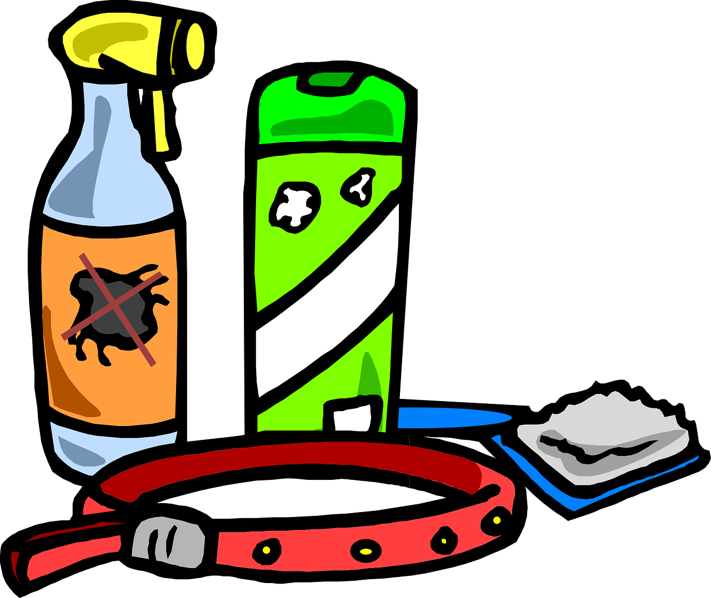

Hospedagem
Hospedagem com segurança e conforto para o seu Pet

Higiene
Cuidados com a higiene do seu Pet durante a Hospedagem
Alimentação
Alimentação balanceda, com rações Super-Premium e petiscos para seu animal

Passeios
Passeios constantes para a distração e alegria do seu Pet.